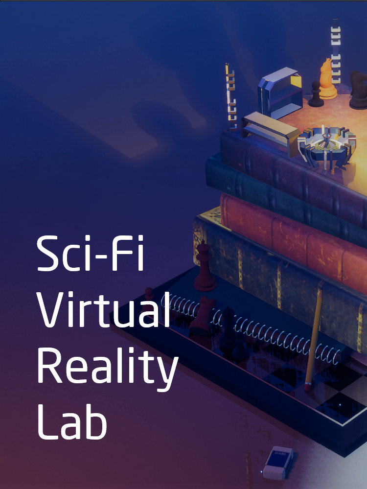
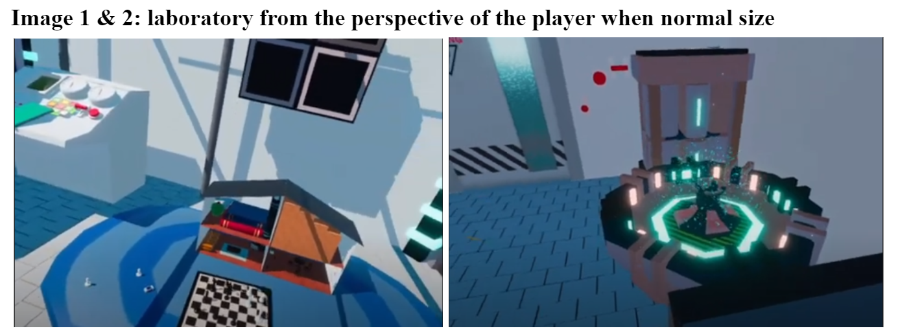
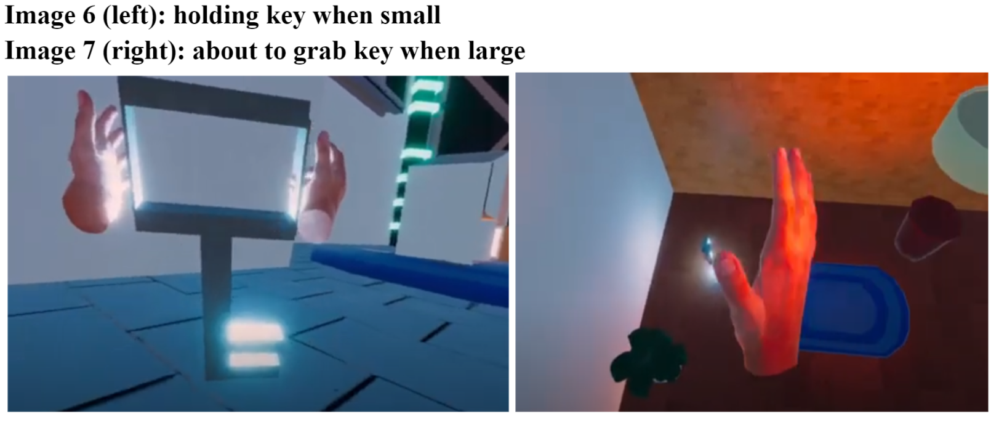
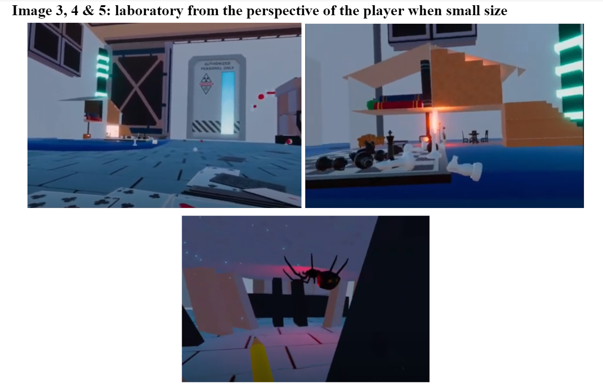

This VR project was developed and submitted to sundance film festival in 2021. View the project on github here.
You can find view the demo video that one of my colleagues created here (or at this link):
Enter the laboratory of a mad scientist, shrink down to the size of a doll and explore the depths of their world. Through playing in this interactable virtual reality, unlock clues that bring you closer to solving the mystery of a mysterious sci-fi musical key. There are many interactable objects, a mysterious spider, and a curious puzzle to solve. The experience can take anywhere from 1 minute to 15 minutes.
  The user enters a room, in preparation to put on the VR headset. The room is a real world replica of the laboratory in the VR scene. They get a sense of the real world scale of the lab, which is reinforced when they put on the headset and find the surroundings to be the same size as the real-world replica. They are in a mad scientist’s playground, full of technological equipment and children’s games from a dollhouse to a deck of cards. The room is small and requires that the user play around with their environment, using intuitive haptic controls; pick up what they can, press buttons, pull levers. The user will soon discover a large red lever that, when pulled, shrinks them down to the size of a doll. There is another very small lever that they can pull to return to their normal size. This ability to change size allows the player to discover that some features are only accessible when large, and some are only accessible when small. There is a dollhouse in the laboratory, with the top floor boarded up all except for a small opening. The opening is too small for the user to reach inside when they are a normal size, and it is too high for the user to simply walk inside when they are small. The first floor of the dollhouse contains a painting with instructions on how to solve a puzzle- these instructions contain a glowing musical key and a mysterious control board. The user must unlock a sequence of events, some of them while they are large and some while they are small, to find access to this mysterious boarded up dollhouse, follow 3d audio cues to find the musical key, and unlock the puzzle of this playful game laboratory. While the room does contain a puzzle for the user to solve, the key feature of this experience is the user’s ability to change size. This ability allows the user to explore the world from a new perspective- from walking through a dollhouse, to across a chessboard or through a house of cards. The room also contains a side experience: a large, yet harmless, spider that the user can choose to approach. This spider will not approach the user, but can still trigger one’s arachnophobia as they move closer to the creature. This feature lets the user confront a fear, and perhaps the edge of their comfort zone, by their own terms. The VR is mobile 6DoF, but we have portals enabled for seated users. Our project currently contains no written or audio instructions, so has no language limitations. Currently users are given spatial audio cues to help them progress, but visual cues can be added to ensure all users get the same experience.